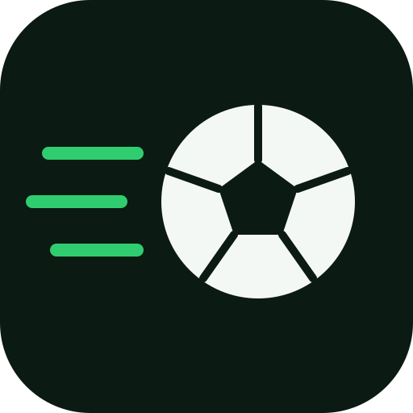

KickClipAppoggia il telefono fermo, di lato al campo,
in orizzontale. Poi premi «Avvia».
in orizzontale. Poi premi «Avvia».
● In ascolto
Livello audio · la linea bianca è la soglia del tiro
Ultimo tiro · 0 in questa sessione
–
Come si usa
- Fissa il telefono su un treppiede (o appoggialo) di lato rispetto al tiro, in orizzontale.
- Premi Calibra scala e tocca due punti a distanza nota, per esempio i due pali (7,32 m).
- Premi Avvia: l'app ascolta il «tump» del pallone e salva da sola i secondi prima e dopo ogni tiro.
Le tue clip
Nessuna clip ancora.
Registra qualche tiro e le trovi qui.
Statistiche
Impostazioni
Rilevamento
Clip
Fotocamera
Dati
Su iPhone: Condividi → «Aggiungi alla schermata Home».
Da sapere
La velocità è una stima ricavata dal video: dipende dalla scala che imposti, dalla posizione del telefono (di lato, fermo) e dai fotogrammi al secondo. Vale per il piano della scala: se il tiro va verso la camera o si allontana, il valore sarà sottostimato.
Tutto resta sul tuo telefono: video e analisi non vengono inviati a nessun server.